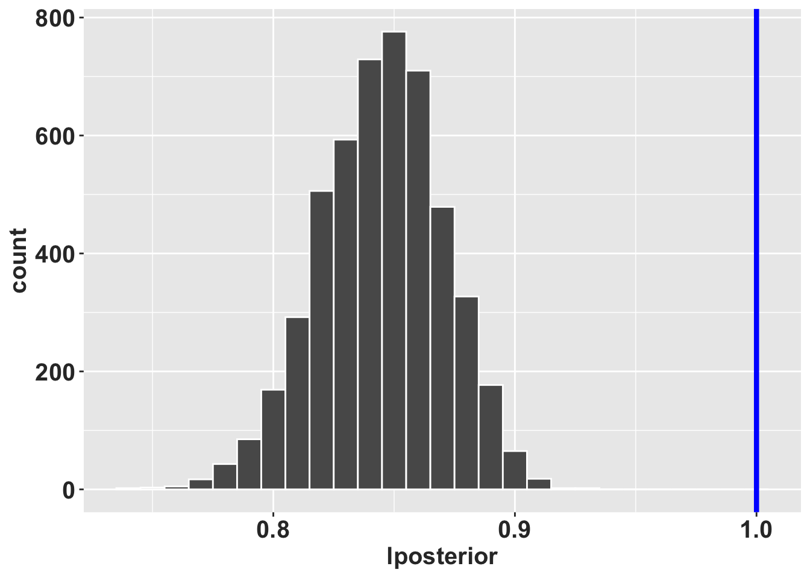

Carl Olaf Tamm
Uno de los padres de la ecología de población
Carl Olaf Tamm (1919-2007) fue un biólogo Sueco y profesor de botánica y suelos de la escuela de “Soil Science at the Royal College of Forestry” (1957-1962) en Estocolmo y el primer profesor de Ecología de bosques de dicha universidad (1962). Su carrera académica se desarrolló en la Universidad de Estocolmo, donde fue profesor de ecología de bosques desde 1957 hasta 1985. Los trabajos de Tamm son reconocidos por trabajos a largo plazo, de múltiples años y décadas, donde el enfatizó la importancia de la variabilidad temporal y espacial en los ecosistemas y los eventos raros en la dinámica de especies. Tamm desarrollo protocolos de muestreos de plantas y suelos en bosques, donde la recolección de datos era anuales y continuos. Algunos de estos trabajos son ahora conocidos como clásicos en ecología de poblaciones y comunidades. Tres de estos trabajos relevante a la dinámica poblacional incluye: @ref(OTamm)
- Observation on reproduction and survival of some perrenial herbs (Tamm 1948).
- Further observations on the survival and flowering of some perennial herbs, I (Tamm 1956).
- Survival and flowering of some perennial herbs. II. The behaviour of some orchids on permanent plots (Tamm 1972).
En la descripción de la dinámica de los individuos muestreado a través del tiempo Tamm pudo observar la variabilidad temporal en la reproducción y supervivencia de las plantas, basado en su presencia o ausencia, si eran reproductivo o no, reclutamiento y individuos que se clonan en adición de si las plantas eran latentes. El utilizo un sistema de presentación de la dinámica de los individuos usando una linea por individuo y identificando en que etapa estuviese en cada año.
Representación visual de los datos de Tamm
Los datos de Tamm fueron compartido de forma visual usando gráficos. En la figura cada linea vertical representa un individuo
- linea gruesa, individuo reproductivo
- linea fina, individuo vegetativo
- linea entrecortada: individuo no muestreado
- linea bifurcada: individuo que se clonan
Tamm creo en el campo parcela de 0.5m x 0.5m o de 1.0m x 1.0m y muestreo todos los individuos en la parcela en años consecutivos (las lineas entrecortada son años no muestreados). Por ejemplo en los años de 1945 al 1947 no se muestreo esta parcela por causa la segunda guerra mundial. Tamm estaba interesado en la dinámica de las orquídeas porque había notado que los individuos no florecen todo los años, y que la floración era un evento raro. Por ejemplo en Orchis sambucina (ahora Dactylorhiza sambucina) notó que en 1942 solamente 7 plantas florecieron y que en 1945 había 40 con flores (Tamm 1948). Tamm sugiere que la poca cantidad de nuevos individuos pudiese ser correlacionado con la competencia para recursos (nutrientes, luz y agua) y que la capacidad de las plantas de sobrevivir eventos difíciles en parte esta correlacionado con la plantas de mayor edad que pudiese tener una menor probabilidad de supervivencia (Tamm 1948). En otra palabra Tamm siguiere que las plantas tienen un limite de años que pueden sobrevivir en otra palabra que haya senescencia en las plantas perennes. Ese concepto de senescencia aun bien apreciado por los biólogos en animales realmente no se había considerado en plantas perennes.
En la siguiente figura se muestra la dinámica de los individuos de Listera ovata muestreado por Tamm desde 1944 a 1971 (Tamm 1972). En esta figura se puede ver la variabilidad temporal en la reproducción y supervivencia de las plantas, basado en su presencia o ausencia, si eran reproductivo o no, reclutamiento y individuos que se clonan en adición de si las plantas eran latentes. El utilizo un sistema de presentación de la dinámica de los individuos usando una linea por individuo y identificando en que etapa estuviese en cada año. El sitio (plot 48) es bosque mesico con un dosel casi cerrado.
En la publicación de 1972 (Tamm 1972), Tamm describe la dinámica de múltiples especies de orquídeas, y alguna especies en múltiples sitios.
| Especies | Núm de la Población | Año del primer muestreo | Año del último muestreo |
|---|---|---|---|
| Dactylorhiza incarnata | 46 | 1944 | 1971 |
| Dactylorhiza sambucina | 17 | 1942 | 1971 |
| Dactylorhiza sambucina | 18 | 1943 | 1964 |
| Dactylorhiza sambucina | 19 | 1943 | 1957 |
| Dactylorhiza sambucina | 20 | 1943 | 1957 |
| Dactylorhiza sambucina | 21 | 1943 | 1957 |
| Dactylorhiza sambucina | 22 | 1943 | 1957 |
| Orchis mascula | 24 | 1943 | 1956 |
| Listera ovata | 48 | 1944 | 1971 |
En la publicación de 1972, Tamm describe la dinámica de cuatro especies orquídea. Esta información no están disponible en COMPADRE al momento. En Dactylorhiza incarnata se observa que múltiples individuos desaparece de un año a otro, que después de 1951 la población es mayormente vegetativa (sin flores). Usando las figuras Tamm trato de ver si había un patrón en la dinámica basado en el cambio de la comunidades, por ejemplo la presencia de un árbol de pino que se estableció cerca de la población de D. sambucina. La población de D. sambucina disminuyo un poco entre 1942 a 1963, pero fue balanceado por el reclutamiento de la misma cantidad de individuos en el mismo periodo. Después de revisar sus datos Tamm sugiere que lo que parece ser individuos nuevos por clonaje pudiese ser realmente nuevos individuos independiente, solamente muy cerca de un individuo establecido anteriormente. La dificultad de muestrear con confianza los individuos en su ambiente es un reto en la interpretación de los datos de plantas perennes.
En Orchis mascula, Tamm observa claramente que la plantas florecen de forma irregular, y que parece tener patrones entre años, que algunos años favorecen la presencia de inflorescencias y otros años no. En Listera ovata, Tamm observa que la población crece, y que hay mucho reclutamiento entre 1944 y 1971, con un incremento de individuos de más de 200% comparando al primer año de muestreo. En adición el demuestra que hay individuos que pueden vivir por muchos años. La edad de algunos individuos de los que el muestreo es de 30 años para D. sambucina, 28 años para L. ovata, 25 años D. incarnata y 14 años para O. mascula, demostrando que el potencial de largo de vida de las orquideas.
Una de las hipótesis de Tamm es que hay senescencia en las orquídeas. En otra palabra la probabilidad de sobrevivir disminuye con la edad. El evaluá el patrón de supervivencia en cuatro especies, Dactylorhiza incarnata, Dactylorhiza sambucina, Listera ovata y Orchis mascula. El uso figuras de supervivencia para evaluar la probabilidad de sobrevivir de un año a otro en una escala logarítmica. Tamm predice que si la supervivencia no es ligado a la edad, la probabilidad de supervivencia debería seguir una linea recta de mortandad (Tamm 1972).
En la figura siguiente se enseña la grafica de supervivencia de Dactylorhiza sambucina muestreado por Tamm desde 1944 a 1971 (re-dibujado por Alondra Martínez Martínez).
Re-evaluación de los datos de Tamm
En la próxima sección se estará re-evaluando los datos de Tamm con métodos recientes.
Primero se estará digitalizando los datos, seguido de construcción de matriz y un análisis sencillo de viabilidad de poblaciones y otras métricas de dinámica de poblaciones.
Instalación de raretrans #2
Para instalar raretrans remover el # antes de correr el script para tener acceso a los códigos de raretrans. Este paquete no esta disponible en CRAN, pero se puede instalar desde GitHub.
#library(devtools) # remover el "#" para la instalación de devtools
#devtools::install_github("atyre2/raretrans", build = TRUE, build_opts = c("--no-resave-data", "--no-manual")) # Instalar el paquete 'raretrans' desde GitHub
library(raretrans)Subir los datos de Tamm
Se puede tener acceso a los datos de Tamm en el archivo “Tamm_1972.xlsx” en la carpeta “data” en Github, de este libro.
Estos datos están limitado a la especie de Dactylorhiza incarnata y se tiene información de los 35 individuos monitoreado en los años 1944 hasta 1971.
library(readxl)
Tamm_1972_column <- read_excel("data/Tamm_1972.xlsx",
sheet = "D_incarnata_by_column")
Tamm_1972_column %>% head()# A tibble: 6 × 24
Plant_Num Year stage next_stage `1948` Fertility `1949` `1950` `1951` `1952`
<dbl> <dbl> <chr> <chr> <chr> <dbl> <chr> <chr> <chr> <chr>
1 1 1944 F V V 0 V V V V
2 2 1944 F V V 0 V V V V
3 3 1944 F V V 0 V V V V
4 4 1944 F V V 0 V V V V
5 5 1944 V V V 0 V V F D
6 6 1944 V F F 0 V V V V
# ℹ 14 more variables: `1953` <chr>, `1954` <chr>, `1955` <chr>, `1956` <chr>,
# `1957` <chr>, `1958` <chr>, `59-64` <chr>, `1965` <chr>, `1966` <chr>,
# `1967` <chr>, `1968` <chr>, `1969` <chr>, `1970` <chr>, `1971` <chr>El primer paso es encontrar una matriz de valores prior para añadir al modelo de construcción de los parámetros de la matriz. Como no podemos discutir de estos valores con Tamm, usamos valores de la literatura. Hay dos especies de Dactylorhiza con matrices en COMPADRE, usando la matriz que más se parece a los datos de los datos de Tamm, se uso como valores prior los de Dacylorhiza lapponica (Sletvold, Øien, and Moen 2010). Se modifico la matriz porque podemos solamente determinar si un individuo falleció después de ser latente. Entonces la suma de probabilidades de vegetativo y reproductivo suman a 1.0 y los latentes no suma a 1.0 (la diferencia es los fallecidos).
Dacty_apriori=matrix(c(0.637, 0.571, 0.740,
0.273, 0.271, 0.049,
0.090, 0.158, 0.059,
0, 0, 0.152), nrow = 4, ncol = 3, byrow=TRUE) # la última fila es la proporción de individuos en esta etapa que fallece.
Dacty_apriori [,1] [,2] [,3]
[1,] 0.637 0.571 0.740
[2,] 0.273 0.271 0.049
[3,] 0.090 0.158 0.059
[4,] 0.000 0.000 0.152Construcción de la matriz de transición
Las etapas en el modelo son Vegetativo (sin flores), Floreciendo (con flores), y Latente (no avistamiento en un año particular) en adición que los individuos fallecidos.
La matriz de transiciones es una matriz de 3 x 3, donde las filas son las etapas futuras (tiempo t+1) y las columnas son las etapas actuales (tiempo t).
Debido a la poca cantidad de datos se estará haciendo una matriz de todo los datos juntos, no se estará considerando la variación inter anual. Pero los datos están disponible por años también en la hoja de Excel y si desean pueden evaluar la variación inter-anual.
Se usará las columnas “stage” etapa en el tiempo t y “next_stage” etapa en el tiempo t+1.
Supuestos del modelo:
- Que los individuos no pueden ser latentes más de dos años consecutivos. Todo individuo que no es visto después de dos años es considerado fallecido. Ese supuesto proviene de haber evaluado la figura de Tamm y ver que no hay individuos que sean vistos después de dos años consecutivos de ser latentes.
- Naturalmente el supuesto grande aqui es que el tamaño de muestra es suficiente para capturar los eventos raros (por ejemplos los individuos que sean latentes más de dos años consecutivos).
- Un individuo fallecido no puede regresar en un estado en el futuro (una condición lógica).
Tmat_D <- Tamm_1972_column %>%
dplyr::select(Year, stage, next_stage, Fertility) %>%
mutate(stage = factor(stage, levels=c("V","F","D","m")),
fate = factor(next_stage, levels=c("V","F","D","m"))) %>%
drop_na(stage, fate) %>%
as.data.frame() %>%
xtabs(~fate + stage, data = .) %>%
as.matrix()
Tmat_D # se contabiliza la cantidad de individuos que pasan de una etapa a otra para todos los años (no se considerá la variación inter anual). stage
fate V F D m
V 128 6 6 0
F 3 0 0 0
D 40 1 1 0
m 0 0 30 0Tmat2 <- Tmat_D[,-4] # remover la columna para transiciones de la muerte (es imposible pasar de fallecido a otra etapas)
Tmat2 stage
fate V F D
V 128 6 6
F 3 0 0
D 40 1 1
m 0 0 30N2_D <- colSums(Tmat2) # obtener el número total de una etapa.
N2_D V F D
171 7 37 Tmat <- sweep(Tmat2[-4,], 2, N2_D, "/") # normalizar las transiciones, nota que el "2" es para decir que haga los cálculos por columna (en este caso división por la cantidad total de individuos en la etapa)
Tmat # la matriz de transición final normalizada con los datos del campo stage
fate V F D
V 0.74853801 0.85714286 0.16216216
F 0.01754386 0.00000000 0.00000000
D 0.23391813 0.14285714 0.02702703Apreciación de la matriz
- La mayoría de los individuos en la población de Dactylorhiza incarnata son vegetativos (sin flores) y siguen vegetativo el próximo periodo.
- La mayoría de los individuos que florecen en un año particular no florecen en el año siguiente.
- Solamente 16% de los individuos latente un año particular son vegetativos el próximo año y ninguno de los individuos latente un año particular florecen el año siguiente.
Constucción de la matriz de fertilidad
Para tomar en cuenta la fecundidad, se necesita una matriz de fertilidad. En este caso los datos son muy limitados, tenemos solamente la cantidad de individuos que florecieron en 1944. Para simplificar, se asume que la cantidad de individuos que florecieron en 1944 (n=5), 1948 (n=1), 1949 (n=2) y 1951 (n=1) es la cantidad de semillas que producen. Solamente el individuo #5 se reprodujo dos veces. Asumimos que todos los nuevos individuos en la población provienen de estos individuos floreciendo y que ningún reclutamiento proviene de fuentes externas, entonces la matriz de fertilidad es la siguiente. De 9 individuos florecidos tenemos 15 individuos nuevos entre 1949 a 1967. Nota aquí que no es la cantidad de semillas producidas, por que no tenemos la información sobre la cantidad de semillas que germinan y se establecen. Lo que tenemos es la cantidad de individuos que florecen y por consecuencia producen nuevos individuos vegetativo. El calculo es 15 individuos nuevos por 9 individuos florecidos = 1.66667 individuos nuevos por individuo florecido. El otro supuesto es que las semillas pueden ser latentes por múltiples años, o se puede que germinan pero no producen individuos vegetativo o con flores inmediatamente, entonces un periodo de latencia después de germinar (una etapa no observada: esa etapa no esta en el modelo).
- La latencia de las semillas de orquídeas es un supuesto que no se puede evaluar con los datos de Tamm, pero es un supuesto razonable si uno toma en cuenta los trabajos de Whigham et al. (Whigham et al. 2006).
Crear la matriz de fecundidad
Fmat <- matrix(0, nrow=3, ncol=3) # crear una matriz de ceros.
Fmat[1,2] <- 15/9 # contar 9 adultos reproductivos en el tiempo t y 15 nuevos individuos en el tiempo t+i en la población. Añadir el valor en la posición correcta de la matriz de fertilidad (nnota es la primera fila, segunda columna).
TF2 <- list(Tmat = Tmat, Fmat = Fmat) # crear una lista con las matrices de transiciones y de fertilidad.
TF2$Tmat
stage
fate V F D
V 0.74853801 0.85714286 0.16216216
F 0.01754386 0.00000000 0.00000000
D 0.23391813 0.14285714 0.02702703
$Fmat
[,1] [,2] [,3]
[1,] 0 1.666667 0
[2,] 0 0.000000 0
[3,] 0 0.000000 0¿Como se ve el ciclo de vida de esa especie en estos años?
- rojo: individuos que se quedan en la misma etapa
- verde: individuos que pasan de una etapa a otra (excluyendo latente)
- azul: individuos que pasan de una etapa a latente
- amarillo: individuos que producen nuevos individuos en la población
Análisis de viabilidad de poblaciones
Ahora usamos la información de las matrices de transiciones, fertilidades y sus valores de prior para calcular los parámetros de la especie
Antes de seguir comparamos la matriz original con los valores de la matriz posterior. Para calcular la matriz de transición y de fecundidad posterior se usa la función “priorweight” para reducir o la aumentar la confianza que uno tiene sobre los valores prior. Nota que como estos valores provienen de otra especies es buena idea reducir la confianza que uno tiene sobre estos valores de “priors” en los análisis usando un priorweight pequeño.
El valor de 0.01, es que se usa 1% de los valores prior y 99% de los valores del campo. Por consecuencia dominará los valores del campo. Nota que en la matriz posterior se observa valores en parámetros que originalmente eran cero (ejemplo: plantas con flores que se queden con flores, valores que no se observaron del campo). Nota ahora tenemos un valor de 2% de individuos que florecen en un año particular que se quedan con flores en el año siguiente. Eso no fue un valor observado en los datos de campo, pero es un valor que se puede calcular con los datos que tenemos, y es probable que sea realista ya que ocurre en otras especies de orquídea del mismo genero. Nota también que hay un pequeña probabilidad que una planta latente sea fértil en el año siguiente (0.004).
TF2$Tmat stage
fate V F D
V 0.74853801 0.85714286 0.16216216
F 0.01754386 0.00000000 0.00000000
D 0.23391813 0.14285714 0.02702703TF3=fill_transitions(TF2, N2_D, P = Dacty_apriori, priorweight = 0.1)
TF3 # la matriz de transiciones posterior [,1] [,2] [,3]
[1,] 0.73839819 0.83112987 0.214692875
[2,] 0.04076715 0.02463636 0.004454545
[3,] 0.22083466 0.14423377 0.029933661El estimado de \(\lambda\)
Como esperado la población de Dactylorhiza incarnata disminuye en el tiempo y el indice de crecimiento es menor que 1.0. El valor de crecimiento intrínsico es de 0.84, que siguiere una disminución de la población de aproximadamente 16% por año. Era a esperar que el crecimiento poblacional sea menor que 1.0, ya que la mayoría de los individuos en la población son vegetativos y que la mayoría de los individuos que florecen en un año particular no florecen en el año siguiente y haya poco reclutamiento y el nivel de mortandad es alta.
popbio::lambda(TF3)[1] 0.8415307Simulando el crecimiento poblacional
Uno de los retos en los análisis de viabilidad de población es la construcción de intervalos de confianza. El valor anterior de lambda es un valor puntual, pero no nos dice nada sobre la variabilidad de los datos. Para calcular el intervalo de confianza se puede hacer una simulación de Monte Carlo. En este caso se simula el crecimiento poblacional de Dactylorhiza incarnata muestreado por Tamm desde 1944 a 1971. Pero esta vez se usará información para hacer un modelo completamente bayesiano. La ventaja es que los valores de credibilidad de los parámetros son más informativos y basado en la incertidumbre las transiciones.
Estimar los intervalos de credibilidad se simula la matriz, tomando en consideración el tamaño de muestra (N2_d), las matriz de los valores del campo (TF2), la matriz de los valores prior (Dacty_apriori), el peso de los valores prior (priorweight), los prior de fertilidad y la cantidad de simulaciones (samples = 5000) que queremos generar (Para determinar la cantidad de simulaciones se puede correr el análisis múltiples veces y evaluar si aumentando la simulaciones impacta los intervalos de credibilidad) . Con esta simulación podemos calcular el intervalo decredibilidad del crecimiento poblacional de Dactylorhiza incarnata muestreado por Tamm desde 1944 a 1971.
Las matrices alpha2 y beta2, representan los parámetros de la distribución gamma con media alpha/beta. En este caso se usa valores muy pequeños para los valores alpha y beta, para que la distribución gamma no sea informativa (non-informative priors) y que los valores de lambda sean muy dispersos. En otra palabra no ponemos mucho peso en los valores prior de la fertilidad, y dejamos que los valores del campo dominan los análisis.
library(popbio)
alpha2 <- matrix(c(NA_real_, 1e-5, NA_real_,
NA_real_, NA_real_, NA_real_,
NA_real_, NA_real_, NA_real_), nrow=3, ncol = 3, byrow = TRUE) # la matriz de los valores alpha
beta2 <- matrix(c( NA_real_, 1e-5, NA_real_,
NA_real_, NA_real_, NA_real_,
NA_real_, NA_real_, NA_real_), nrow=3, ncol = 3, byrow = TRUE) # la matriz de los valores betaAhora unimos todos los valores, para simular el crecimiento poblacional de Dactylorhiza incarnata con la función sim_transitions muestreado por Tamm desde 1944 a 1971.
- TF2 es la matriz de transiciones y de fertilidades
- N2_D es el vector de la cantidad de individuos en cada etapa
- Dacty_apriori es la matriz de los valores prior
- alpha2 y beta2 son los valores de los parámetros de la distribución gamma para la fertilidad
- priorweight es el peso de los valores prior
- samples es la cantidad de simulaciones que queremos generar.
Dacty_0.1 <- sim_transitions(TF2, N2_D, P = Dacty_apriori, alpha = alpha2, beta = beta2,
priorweight = 0.1, samples = 5000) # generar 5000 matrices basado en las previas de transiciones y de fertilidades, el tamaño de muestra, en adición de los datosSe convierte el objeto “Dacty_0.1” en un tibble para poder visualizar la distribución de los lambda que proviene de la simulación.
Dacty_0.1b <- tibble(lposterior = map_dbl(Dacty_0.1, lambda))Visualización de las distribuciones de los lambda. Se nota claramente que la población de Dactylorhiza incarnata muestreado por Tamm desde 1944 a 1971 tiene un crecimiento poblacional menor que 1.0. Nota que esta similación considerá variación demografica en los datos.
ggplot(data = Dacty_0.1b,
mapping = aes(x = lposterior)) +
geom_histogram(binwidth = 0.01, colour="white") +
rlt_theme+
geom_vline(xintercept = 1,
color = "blue", size=1.5)Warning: Using `size` aesthetic for lines was deprecated in ggplot2 3.4.0.
ℹ Please use `linewidth` instead.
Para concluir, la población de Dactylorhiza incarnata muestreado por Tamm desde 1944 a 1971 tiene un crecimiento poblacional menor que 1.0 (lambda promedio de 0.84), con un intervalo de confianza de 0.79 a 0.89. Esto indica que la población esta reduciendo en el tiempo por aproximadamente 16%, pero que realmente la reducción pudiese ser entre 21% a 11%. El indice de pincrease es el valor de p para evaluar si la población esta creciendo o decreciendo. En este caso el valor es 0.000, lo que indica que la población esta decreciendo.
Dacty_0.1bdf=as.data.frame(Dacty_0.1b)
Dacty_0.1_summary <- dplyr::summarize(Dacty_0.1bdf,
medianL = median(lposterior),
meanL = mean(lposterior),
lcl = quantile(lposterior, probs = 0.025),
ucl = quantile(lposterior, probs = 0.975),
pincrease = sum(lposterior > 1.)/n()
)gt(signif(Dacty_0.1_summary, digits = 3))| medianL | meanL | lcl | ucl | pincrease |
|---|---|---|---|---|
| 0.846 | 0.845 | 0.793 | 0.891 | 0 |
Revisión RLT: Oct 7, 2024
Revisión RLT: Oct 8, 2024
Revisión RLT: Oct 30, 2024
Revisión RLT: el 26 de Noviembre, 2024
Revisión RLT: el 18 de enero, 2025
References
Sletvold, Nina, Dag-Inge Øien, and Asbjørn Moen. 2010. “Long-Term Influence of Mowing on Population Dynamics in the Rare Orchid Dactylorhiza lapponica: The Importance of Recruitment and Seed Production.” Biological Conservation 143 (3): 747–55.
Tamm, Carl Olof. 1948. “Observations on Reproductive and Survival of Some Perrenial Herbs.” Botanish Notiser, 305–21.
———. 1956. “Further Observations on the Survival and Flowering of Some Perennial Herbs, i.” Oikos 7 (Fasc. 2): 273–92.
———. 1972. “Survival and Flowering of Some Perennial Herbs. II. The Behaviour of Some Orchids on Permanent Plots.” Oikos, 23–28.
Whigham, Dennis F, John P O’Neill, Hanne N Rasmussen, Bruce A Caldwell, and Melissa K McCormick. 2006. “Seed Longevity in Terrestrial Orchids–Potential for Persistent in Situ Seed Banks.” Biological Conservation 129 (1): 24–30.